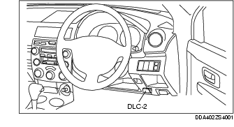

On-board diagnostic system external tester communication function
• The external tester communication function communicates diagnostic information (reading DTCs, reading input/output signal, driving output parts) by sending and receiving signals between the ABS HU/CM and external tester.
Connection and communication information
Serial Communication
• Serial communication (synchronous communication) is a method of communication in which many pieces of information are sent and received instantaneously through a single wire.
• By connecting the WDS or equivalent to DLC-2, diagnostic information can be sent and received between the WDS or equivalent and the ABS HU/CM via the KLN terminal.
• The ABS HU/CM receives signals for the malfunction detection function, data monitor function, and active command modes function from the WDS or equivalent, and sends information about DTCs and input/output part operating conditions to the WDS or equivalent.
